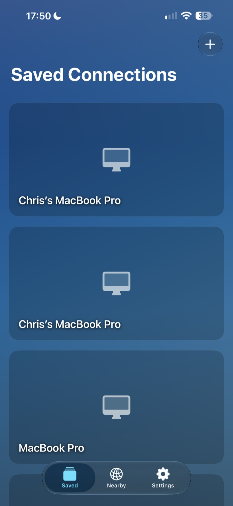

What you need
An iPhone with iOS 18 or later, or an iPad with iPadOS 18 or later, and a reachable computer running a compatible VNC or RDP server, or Mac Screen Sharing.
VNC and RDP for iPhone and iPad
Your desktop, wherever you need it. Connect to your Mac, Windows PC, Linux computer or Raspberry Pi from your iPhone or iPad.
No account. No subscription. Private by design.

GlanceVNC is a VNC and RDP remote-desktop app by Chris Russell for iPhone and iPad. It helps home users and professionals view and control computers they own or are authorised to access, whether checking an application, working with a document or carrying out a desktop task.
An iPhone with iOS 18 or later, or an iPad with iPadOS 18 or later, and a reachable computer running a compatible VNC or RDP server, or Mac Screen Sharing.
Connect over your local network, or remotely through your own VPN that provides access to your computer. GlanceVNC connects directly to your computer and does not provide a hosted relay.
GlanceVNC is a paid App Store download with all features included. There are no subscriptions or in-app purchases, and no GlanceVNC account is required.
Read setup instructions and compatibility details or browse our setup guides.
Feature Set
Keep your saved computers together, choose how you control the pointer, and set display and input preferences for each connection.
Access your Mac, Windows PC, Linux computer or Raspberry Pi running a compatible VNC or RDP server, or Mac Screen Sharing, all from one app.
Save your computers and reconnect with a tap. Connection cards show recent desktop previews when available, or a clear placeholder when they are not.
Discover compatible VNC desktops on your local network. Connect immediately, or save one for later.
Keep saved connection details in sync between your iPhone and iPad with private iCloud sync. Device-specific input and display preferences stay local.
Tap directly in Touch mode, or move the pointer in Trackpad mode. Pinch to zoom; the enlarged view follows the pointer in Trackpad mode, while Touch mode holds your chosen area steady.
On iPad, tap to click or drag directly with Apple Pencil. Hover positions the remote cursor on supported iPads.
Type with a hardware keyboard or the on-screen keyboard. Familiar shortcuts use Command for Mac connections and Control for Windows or Linux.
RDP uses TLS. For compatible VeNCrypt VNC servers, optionally require certificate-verified TLS with system trust, an imported certificate or a SHA-256 fingerprint.
Copy and paste plain text between your device and a compatible remote computer using the session toolbar or hardware keyboard shortcuts.
Choose a home-screen photo, show or hide connection thumbnails, and set VNC colour depth and display mode for each connection.
A refreshed home screen brings Saved Connections, Nearby Connections and Settings into clearer view. Connection cards show desktop thumbnails or placeholders, and nearby VNC computers can be opened without saving them first. iPhone uses a tab bar in portrait and landscape; iPad keeps a sidebar.
Apple Pencil now works as a direct pointer on iPad. Hardware keyboards, per-connection Operating System shortcuts and display choices make remote work easier. Compatible VeNCrypt VNC servers can use certificate-verified TLS, while RDP continues to use TLS. Explore setup and feature help.
Availability
No account. No subscription. Private by design.
GlanceVNC supports iPhone and iPad running iOS 18 or iPadOS 18 or later. Check the App Store for the currently available version. See Setup Help for compatible servers and connection instructions.